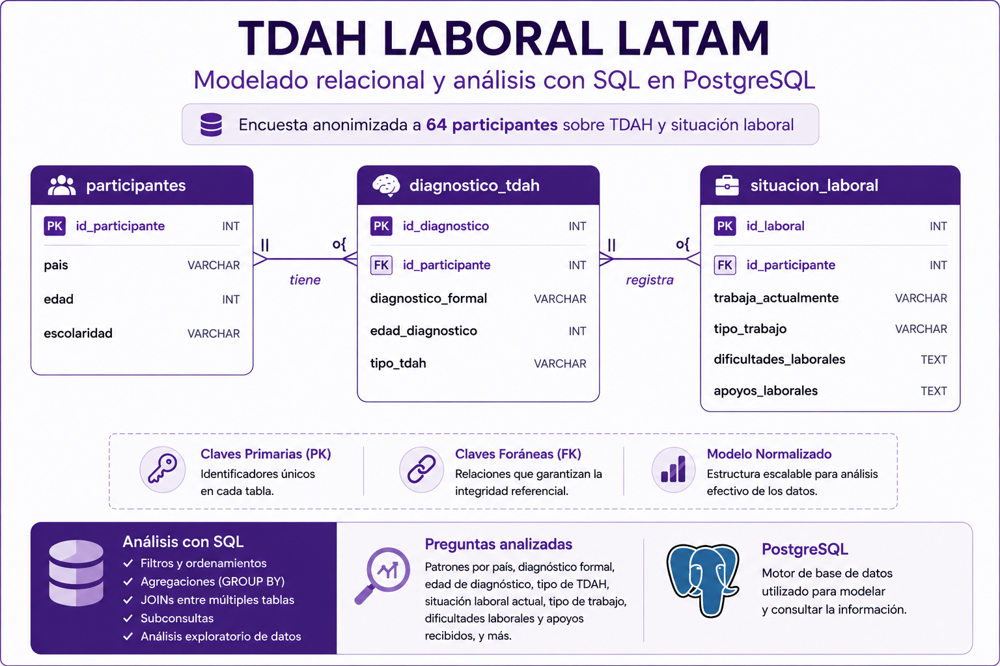
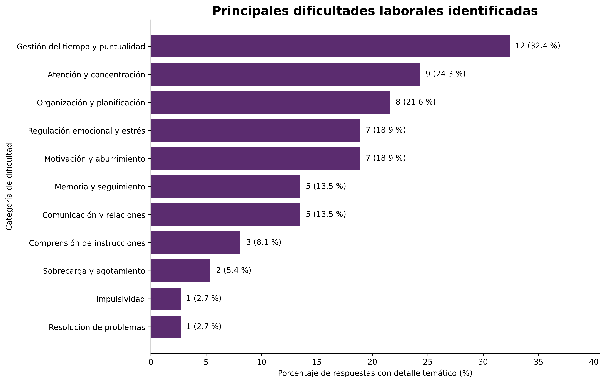
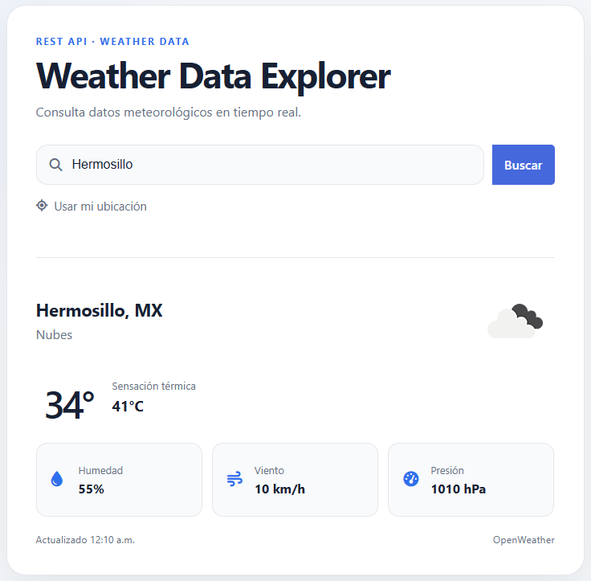
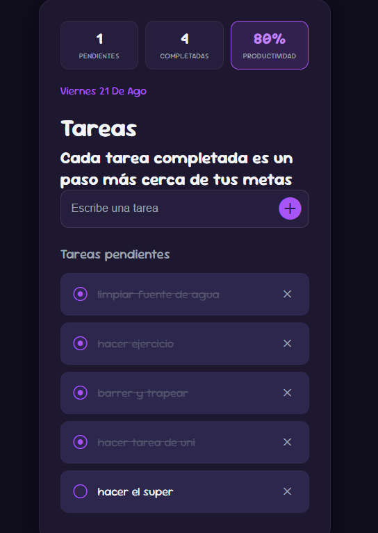

Alejandra González Madrid
Pasante de Ingeniería en Sistemas Computacionales
Prácticas Profesionales
Soy estudiante del último cuatrimestre de Ingeniería en Sistemas Computacionales en la Universidad Virtual del Estado de Guanajuato (UVEG). Actualmente busco una oportunidad para realizar mis Prácticas Profesionales, donde pueda aplicar mis conocimientos, adquirir experiencia en proyectos tecnológicos y continuar desarrollándome en el sector de tecnologías de la información.
Cuento con experiencia profesional en atención al cliente, gestión de información comercial, procesos administrativos y elaboración de reportes e indicadores de desempeño (KPIs), utilizando herramientas como Excel Avanzado, Power Query, sistemas CRM y ERP. Durante mi formación académica también he adquirido conocimientos en programación, bases de datos, desarrollo web y análisis de datos, utilizando tecnologías como Python, SQL, MongoDB, HTML, CSS y JavaScript.
Tengo especial interés en proyectos relacionados con la gestión, transformación y análisis de datos, aunque estoy abierta a desarrollarme en otras áreas de tecnología. Además, soy Licenciada en Ciencias Nutricionales y tengo una Maestría en Nutrición Clínica, formación que complementa mi perfil tecnológico con experiencia en investigación, análisis de información y resolución de problemas desde una perspectiva interdisciplinaria.
Habilidades y Herramientas
Conocimientos en programación, desarrollo web, bases de datos y gestión de información, complementados con experiencia profesional y habilidades para resolver problemas tecnológicos.
Programación y desarrollo web
- Python y JavaScript
- HTML5, CSS3 y Bootstrap
- Desarrollo frontend
- Integración de APIs REST
- Manipulación del DOM
- JSON y Fetch API
Bases de datos
- SQL y consultas relacionales
- PostgreSQL, MySQL y MariaDB
- MongoDB (NoSQL)
- Modelado de datos
- JOINs y subconsultas
- Filtrado y agregaciones
Análisis y gestión de datos
- Python: Pandas, NumPy y Matplotlib
- Limpieza y transformación de datos
- Análisis exploratorio (EDA)
- Procesos ETL
- Excel avanzado y Power Query
- Reportes e indicadores (KPIs)
Herramientas y plataformas
- Git y GitHub
- Visual Studio Code
- Google Colab y Jupyter Notebook
- Vercel y GitHub Pages
- Sistemas CRM y ERP
- LocalStorage
Metodologías y procesos
- Fundamentos de Scrum
- Gestión de proyectos
- Documentación técnica
- Pruebas funcionales de software
- Control de versiones
- Mejora de procesos
Competencias profesionales
- Pensamiento analítico
- Resolución de problemas
- Comunicación efectiva
- Aprendizaje continuo
- Atención al detalle
- Atención y orientación al cliente
Proyectos Destacados
Proyectos de programación, bases de datos, análisis de información y desarrollo de soluciones tecnológicas.

TDAH laboral LATAM: modelado relacional y análisis SQL
Diseñé e implementé una base de datos relacional en PostgreSQL para estructurar información anonimizada de 64 participantes de una encuesta sobre TDAH y situación laboral. Organicé los datos en tres tablas relacionadas mediante claves primarias y foráneas, y desarrollé consultas SQL con JOINs, filtros, agregaciones y subconsultas para explorar información demográfica, diagnóstica y laboral.

TDAH laboral LATAM: análisis exploratorio de datos
Análisis exploratorio de una encuesta anonimizada a 64 participantes sobre TDAH y situación laboral en Latinoamérica. Desarrollé un flujo de preparación, limpieza, transformación y validación de datos con Python, utilizando Pandas y Matplotlib para generar visualizaciones, explorar patrones descriptivos y clasificar respuestas abiertas.

Weather Data Explorer | REST API & Serverless
Desarrollé una aplicación web interactiva para consultar y visualizar información meteorológica mediante la integración de OpenWeather API. Implementé solicitudes a una API REST, procesamiento de respuestas JSON, geolocalización y conversión de unidades. Incorporé una función serverless desplegada en Vercel para gestionar las solicitudes y evitar exponer la clave de acceso a la API en el código del navegador.

Aplicación de Gestión de Tareas | JavaScript y Dashboard de Productividad
Desarrollé una aplicación web de gestión de tareas con JavaScript, HMTL y CSS, incorporando funcionalidades para agregar, completar y eliminar actividades. Implementé persistencia mediante LocalStorage y un panel de indicadores dinámicos que calcula tareas pendientes, completadas y porcentaje de avance, actualizándose automáticamente con cada interacción.
Testimonios
Referencias de mentoras y colegas en el sector tecnológico
¿Buscas talento para tu equipo de Sistemas/TI?
Estoy lista para aportar como Pasante de Ingeniería en Sistemas Computacionales. Si buscas a alguien con rigor analítico, conocimiento de SQL/Python y pasión por la calidad del dato, hablemos.
Enviar Correo